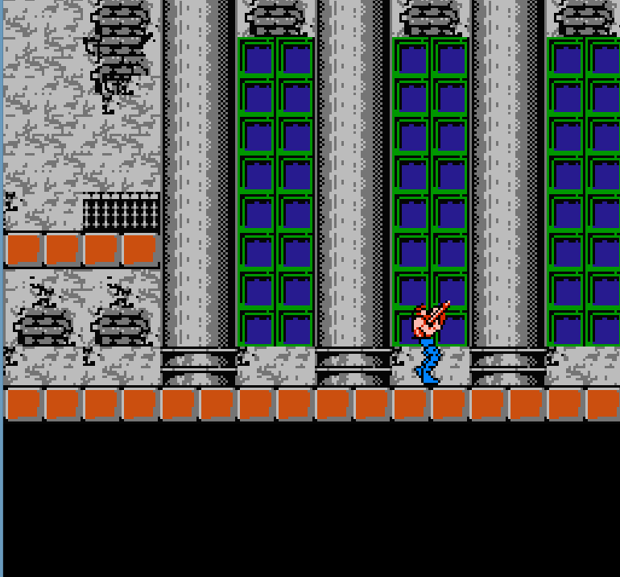
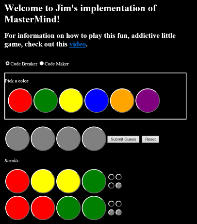

Contravania
My Contra/Castlevania NES crossover game, written using the XNA SDK. It is a pretty rough prototype. Contra level 1 is completable, but Contravania itself is just a sandbox demonstrating Bill Rizer wandering around the Contra level 1 maps, first two sections only. The stair-climbing functionality is there, though it's not animated at the moment so it sometimes can look like he's riding an escalator.
The game can be played on the keyboard or Xbox 360 Controllers- the latter being required if you want to play additional players.
My friend Chris Hodge whipped up the mashup title screen. Thanks, Chris!
Requirements:
- Windows 7 or later; this should have the .NET Framework and DirectX software needed to run XNA and Contravania.
Installation instructions:
- Install XNA Framework 4.0 (I still need to figure out how to bootstrap this into the ClickOnce manifest)
- Click here to install Contravania a/k/a RunandGun
Release History:
- 5/28/2015 - Initial "Alpha" release of game.
- 6/15/2015 - Revamp player animations, including gun recoil animation. Flying weapon drops. SPREAD GUN!!!
- Coming next:
- Look into other controller options so you can use standard gamepads rather than XBox controllers.
- Snipers that actually do something.
- Fix up some hit detection problems
- Lower difficulty of turrets- those things are viciously relentless in my version. :)
- Game over screen
- Weapon: Machine Gun
- 5/28/2015 - Initial "Alpha" release of game.
- 6/15/2015 - Revamp player animations, including gun recoil animation. Flying weapon drops. SPREAD GUN!!!
- Coming next:
- Look into other controller options so you can use standard gamepads rather than XBox controllers.
- Snipers that actually do something.
- Fix up some hit detection problems
- Lower difficulty of turrets- those things are viciously relentless in my version. :)
- Game over screen
- Weapon: Machine Gun
- Look into other controller options so you can use standard gamepads rather than XBox controllers.
- Snipers that actually do something.
- Fix up some hit detection problems
- Lower difficulty of turrets- those things are viciously relentless in my version. :)
- Game over screen
- Weapon: Machine Gun
MasterMind
A fun little logical deduction game a friend introduced to me last summer. After learning to play it, I thought it would be fun to try writing the logical deductions with code, so I used this as an opportunity to teach me some Javascript to aid my transition from being a Windows programmer to a web developer.
To play my little implementation of Mastermind, Go here!
